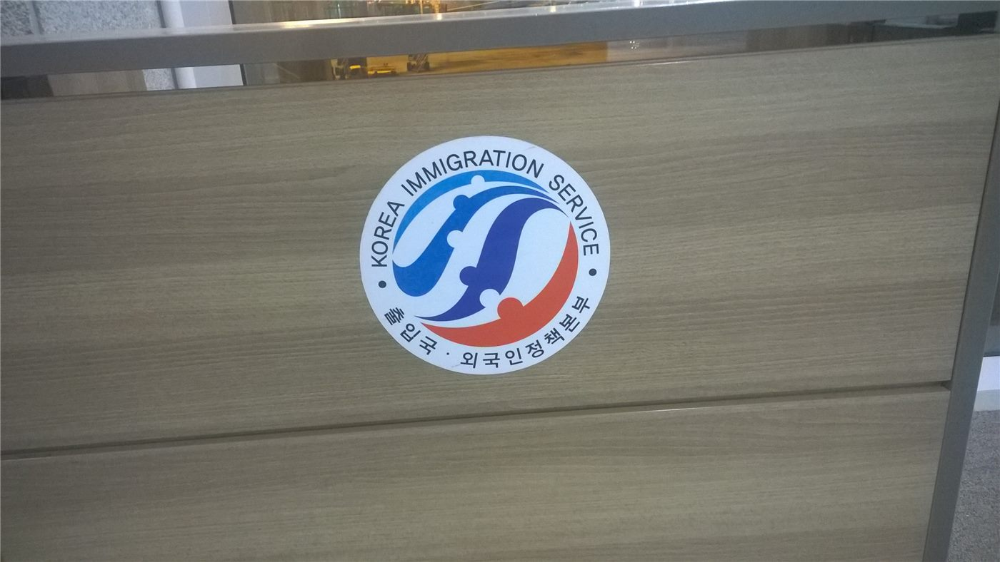

【화교소식】인천화교협회 “영주권 외국인, 10년마다 비자(영주증) 갱신” 안내
인천화교협회가 영주권(F-5)을 가진 외국인은 10년에 한 번 관련 체류 증명을 갱신해야 한다는 안내를 공지했다. 재한 화인 사회의 실생활과 직결되는 행정 정보다.
마약란 기자 · 2026.08.26
橋화인소식

인천화교협회는 홈페이지 공고를 통해 ‘영구 거류권(영주 자격)을 가진 외국인은 10년에 한 차례 관련 증명(영주증)을 갱신해야 한다’는 내용을 안내했다.
광고 문의 · 300×250영주 자격 자체는 유지되더라도, 이를 증명하는 카드(영주증)에는 유효기간이 있어 기간 만료 전에 갱신 절차를 밟아야 한다. 갱신을 놓치면 신분 증명과 각종 행정 처리에 불편이 생길 수 있다.
협회는 대상자들이 만료일을 미리 확인하고, 필요한 서류와 신청 방법을 사전에 준비할 것을 권했다. 세부 절차와 준비물은 관할 출입국·외국인관서의 안내를 따르는 것이 정확하다.
재한 화인 가운데는 영주 자격으로 오래 거주해 온 이들이 많아, 이번 안내가 실질적인 도움이 될 것으로 보인다. 특히 고령층은 갱신 시기를 놓치기 쉬워 주변의 관심이 필요하다.
협회는 회원들의 문의에 대응하고, 필요한 경우 절차 안내를 돕겠다고 밝혔다. 자세한 내용은 인천화교협회 공고에서 확인할 수 있다.
華橋時報는 화인 사회의 생활 행정 정보를 정확히 정리해 전하며, 개인은 반드시 관할 기관의 공식 안내를 함께 확인하기를 권한다.
출처·참고 (사실 확인용 — 본문은 직접 재작성)
· 인천화교협회(craik.co.kr)
· 인천화교협회(craik.co.kr)